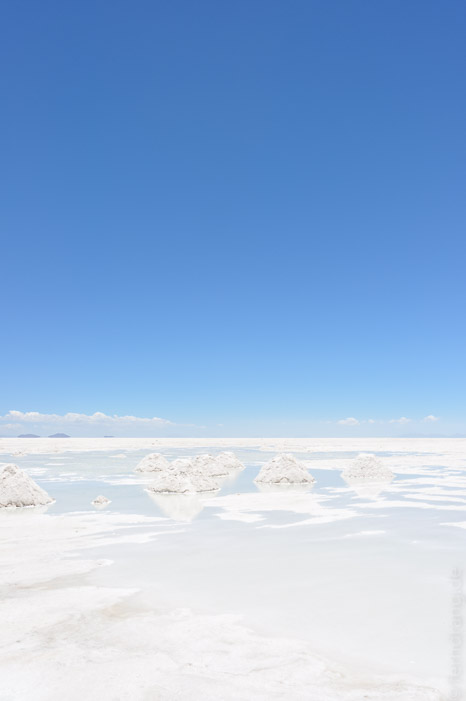

Am frühen Abend sind wir mit dem Nachtbus nach Uyuni gestartet. Anfangs dachten wir, der üble Ruf der Straße sei vollkommen übertrieben, aber nach ein paar Stunden sind wir nur noch über eine holprige Schotterpiste gebrettert. Es ist erstaunlich, dass der Bus das mehr als einmal aushält. Wir durften noch bis Sonnenaufgang im Bus weiterschlafen und konnten dann um 5 Uhr das Kaff Uyuni langsam aufwachen sehen.
Unsere Gruppe bestand aus 4 weiteren Gästen (2x Bolivien, 1x Spanien, 1x Sachsen), einem Fahrer und einer lethargischen Köchin in einem dicken Jeep. Den Rest des Tages haben wir mit Fahrten durch den Salar de Uyuni verbracht. Die Salzwüste erstreckte sich zu allen Seiten bis zum Horizont, wo die umgebenden Berge durch Fata Morganas zu schweben schienen. Ein ganzer Tag lang nur überirdisches Weiß und Blau.
Mitten im Salz erhebt sich die Fischerinsel, die über und über mit Kakteen bewachsen ist, die mehr als 10m hoch werden. Rund herum reicht das Salz wie ein trockenes Meer an die Ufer der Insel.
Die erste Nacht haben wir in einem Bau von landestypischer Trostlosigkeit verbracht. Das Wellblechdach war so schlecht befestigt, dass der heftige Wind einen Höllenlärm gemacht hat. Aber wir konnten warm duschen.
